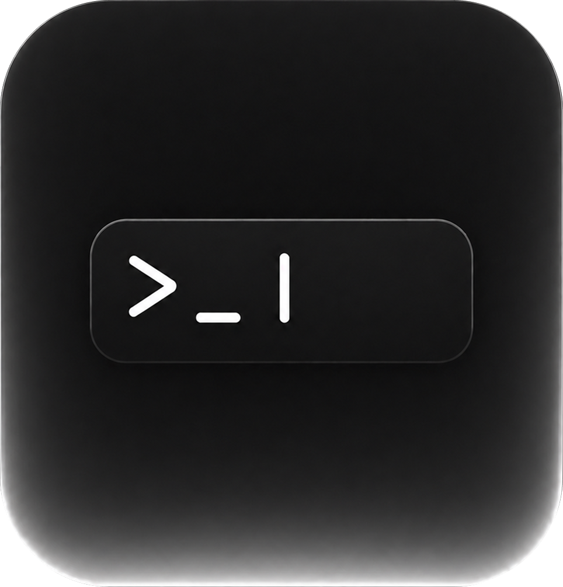

플로팅 입력
어떤 앱 위에서든 ⌥Space만 누르면 작은 패널이 떠오릅니다. 명령을 입력하고 Enter를 누르면, 그게 전부입니다.

Zap서명 없는 빌드 — 첫 실행은 우클릭 → 열기
화면을 옮기지 않고, 한 입력창에서 원하는 터미널 탭에 명령을 보냅니다.
창을 떠나도, 끝나는 순간을 놓치지 않고 알려줍니다.
어떤 앱 위에서든 ⌥Space만 누르면 작은 패널이 떠오릅니다. 명령을 입력하고 Enter를 누르면, 그게 전부입니다.
⌘1~9로 터미널 그룹을 점프하고, Tab으로 같은 그룹 안의 탭을 순환합니다. 명령은 항상 의도한 탭으로 정확하게 전달됩니다.
창을 떠나도 명령은 계속 실행됩니다. 끝나는 순간 노치가 살짝 펼쳐져 결과와 소요 시간을 알려줍니다.